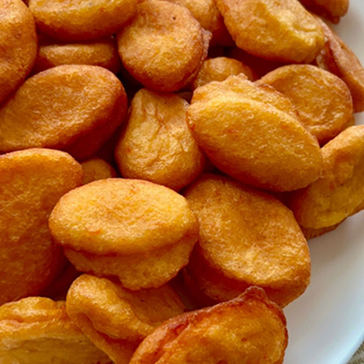

AKARA BEANS RECIPE

Brief Introduction
Akara is a popular West African dish, particularly enjoyed in Nigeria, Ghana, and surrounding countries. It is made from black-eyed peas (or sometimes other types of beans), which are soaked, peeled, and blended into a smooth batter. The batter is seasoned with spices, onions, and occasionally peppers to add flavor. The mixture is then deep-fried into small, round, or oblong fritters.
Ingredients Required to prepare Akara
Main Ingredients
- Black-eyed peas:2 cups (or any other type of beans, such as brown beans).
- Onion: 1 medium-sized (chopped or blended).
- Scotch bonnet pepper (or any chili): 1-2 pieces (adjust to taste).
- Salt: To taste.
- Water: As needed for blending.
Optional Ingredients
- Seasoning cubes: 1 small (optional, for extra flavor).
- Bell peppers: 1 small red or yellow (for a sweeter taste).
- Garlic: 1 clove (optional, for added depth of flavor).
For Frying
- Vegetable oil: Enough for deep frying
Steps Required to Prepare Akara
Soak the Beans
- Soak the black-eyed peas in water for about 1-2 hours (or overnight if you prefer). This softens the skin and makes peeling easier.
Peel the Beans
- Remove the skins by rubbing the beans between your palms. Rinse with water repeatedly to separate the skins from the beans.
Blend the Beans
- Transfer the peeled beans into a blender. Add a little water (just enough to help with blending) and blend into a smooth, thick paste. Do not make it too watery.
Add Ingredients
- ransfer the blended paste into a bowl.
- Mix in the chopped onions, finely blended peppers, and salt (and any optional seasoning). Stir thoroughly to combine.
Whisk the Batter
- Use a whisk or spoon to mix the batter vigorously. This incorporates air, making the Akara fluffy when fried.
Frying Steps
- Heat vegetable oil in a deep frying pan or pot over medium heat. The oil should be hot but not smoking.
- Scoop spoonfuls of the batter and gently drop them into the hot oil. Fry in batches, ensuring not to overcrowd the pan.
Cook Evenly
- Fry the Akara fritters until golden brown, turning them occasionally to ensure even cooking.
Drain the Oil
- Remove the Akara using a slotted spoon and place them on a paper towel to drain excess oil.
Serving
- Serve hot with bread, pap, custard, or enjoy as a snack on its own.
- Pro Tip: Avoid making the batter too watery; a thick consistency yields better results.